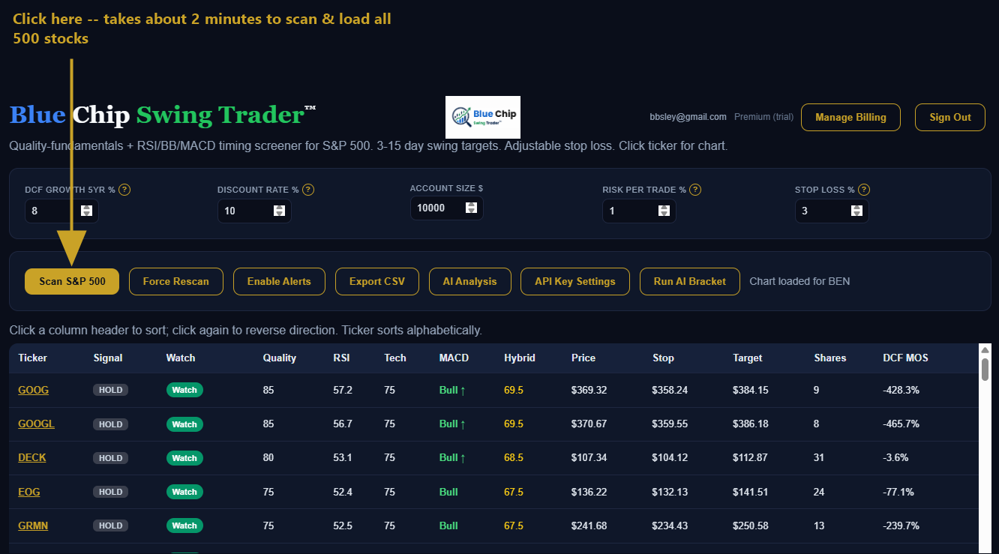

User Manual
1. What Blue Chip Swing Trader does
The idea behind this tool is to combine two things that are usually kept separate: high-quality, non-speculative stocks with solid underlying fundamentals, and short-term technical timing for a 3-15 day swing trade. Every stock has to clear a fundamentals bar first (profitability, low debt, growth, a reasonable valuation) before technical timing (RSI, Bollinger Bands, MACD) is even considered — you're never looking at a speculative or fundamentally weak name that just happens to look good on a chart. It's built for a short-term hold of a quality stock, not a long-term buy-and-hold position and not a purely momentum-driven trade.
This is a different starting point from most AI stock-picking tools. Many of them rank purely on chart patterns, with no fundamentals gate at all — a stock can look "cheap" technically while its underlying business is deteriorating. Others trade every asset class — commodities, futures, options — where speed and speculation matter more than business quality. Blue Chip Swing Trader stays deliberately narrower: S&P 500 stocks only, and every one of them has already cleared a published, named quality bar before timing is even considered.
2. Setting your inputs
Five inputs at the top of the page control how stocks are scored and how positions are sized. All five apply the next time you scan.
DCF Growth 5yr %
This is the assumed annual growth rate for a company's free cash flow over the next 5 years, used in the app's discounted cash flow (DCF) calculation to estimate what a stock is really worth today. A DCF works in two stages: an explicit forecast for the next several years (this is what "DCF Growth 5yr %" controls), followed by a "terminal value" representing everything beyond that — all of it discounted back to today's dollars, since a dollar received later is worth less than a dollar in hand now. The app fixes the terminal-value growth rate at a conservative 2.5% (a realistic long-term rate, in line with standard practice — anything much above that implies a company outgrowing the economy forever, which isn't sustainable), so your input only affects the near-term, explicit part of the forecast. A higher growth rate assumption produces a higher estimated intrinsic value; the app then compares that estimate to the stock's actual price to calculate the DCF Margin of Safety column — a positive number means the stock appears undervalued relative to your assumption, a negative number means it appears expensive.
Discount Rate %
Required annual rate of return used to discount future cash flows in the DCF (an equity/opportunity-cost assumption — not the Fed's policy rate).
Account Size $
Your total trading capital. Used together with Risk Per Trade % and Stop Loss % to size positions — it doesn't affect which stocks qualify or how they're ranked, only the Shares column.
Risk Per Trade %
Percentage of Account Size you're willing to lose if the stop-loss is hit. Combined with Stop Loss % and price, this sets the Shares column (position size) — it does not set the exit price itself.
Stop Loss %
Percentage below entry price used as the stop-loss trigger (1-5%). This sets the exit price; Risk Per Trade % then sizes how many shares to buy given that exit price.
3. Scanning the S&P 500

Click Scan S&P 500 to fetch and score all roughly 500 stocks in the index. This takes about 2 minutes, since each stock's price history and fundamentals are fetched individually. Once it's done, the results table below fills in — sorted by Hybrid rank, with every qualifying stock's Quality, RSI, Tech, MACD, Hybrid, Price, Stop, Target, Shares, and DCF Margin of Safety.
Force Rescan does the same thing but ignores the same-day cache and re-fetches everything fresh with your current inputs — use this if you've changed an input and want the table to reflect it immediately rather than waiting for tomorrow's scan.
4. Reading the chart
Once a scan has completed, click any ticker symbol in the table to instantly bring up that stock's chart — three panels stacked on top of each other:

Top: Price
The blue line is daily closing price. The gold line is the 20-period simple moving average (SMA20) — the average closing price over the last 20 trading days, a common reference for the underlying trend. The dotted lines above and below are Bollinger Bands: they widen when the stock is more volatile and narrow when it's quieter, and they're centered on that same SMA20. Price near the lower band can signal an oversold, potential-bounce condition; price near the upper band can signal an overbought, extended condition.
Middle: RSI (purple)
RSI — Relative Strength Index — measures how strong recent price momentum has been, on a 0-100 scale. Above 50 means bullish momentum has the upper hand recently; below 50 means bearish momentum does. The red line at 70 marks overbought — you generally wouldn't want to buy a stock already near 70, since it's already had a strong short-term run-up and carries more downside risk from here. The green line at 30 marks oversold. A stock sitting in the 30-45 range, combined with other signals pointing the same way, can indicate it's forming a bottom and getting ready for a bounce — though RSI alone doesn't confirm that, it's one input among several.
Bottom: MACD (green/red histogram)
MACD — Moving Average Convergence/Divergence — compares two moving averages to gauge whether momentum is accelerating or fading. The histogram bars show the gap between the MACD line and its signal line: green (positive) bars mean bullish momentum, red (negative) bars mean bearish momentum. A rising histogram, even while it's still in red/negative territory, is a meaningful early signal — it means the downtrend is losing steam before the stock has actually crossed back to bullish, which can indicate the stock is basing and getting ready to bottom, ahead of a slower, lagging bullish crossover confirming it.
This full three-panel chart comes with every plan, for every stock in the index — it's not a metered add-on you pay extra for as you use it more, the way some competing platforms structure their per-feature usage fees.
5. My Positions — paper trading & Excel export
The My Positions section lets you track trades — your own picks, or ones sourced from AI Analysis or AI Bracket — against your actual account size and risk settings.
- Click + Enter Position and type in the ticker, buy price, number of shares, and buy date.
- The next time you click Scan S&P 500 (or Refresh Prices), current prices are fetched automatically and P/L $ and P/L % are calculated live for every position you've entered.
- The portfolio summary shows all of your open positions together, and a separate table tracks closed positions with realized P/L once you close one out.
To keep a permanent record, click Export Positions (Excel) — this generates a real, formatted .xlsx spreadsheet (not just a plain CSV), since positions are stored only in your own browser and not on our servers. Exporting weekly is a good habit so you always have your own copy.
My Positions is tied to the same scoring engine that generated the pick in the first place — not a bolt-on trade journal disconnected from the analysis behind it.
6. Getting your Anthropic API key
AI Bracket is a "bring your own key" (BYOK) feature: instead of running on Blue Chip Swing Trader's own server, it uses your own personal Anthropic API key, calling Anthropic directly from your browser. Blue Chip Swing Trader never sees or stores this key on any server — it's kept only in your own browser's local storage.
- Go to platform.claude.com/dashboard and create an account (or sign in if you already have one) — it's free to sign up, and you only pay for what you actually use.
- Find API Keys (usually under account or organization settings).
- Click Create Key, give it any name you like (e.g. "Blue Chip Swing Trader").
- Copy the key immediately — it starts with
sk-ant-...and Anthropic only shows it to you once. - In Blue Chip Swing Trader, click API Key Settings in the toolbar, paste the key in, and click Save Key.
Creating the account and key is free; usage is billed pay-as-you-go, and a typical full AI Bracket run (4 comparisons) costs well under $0.10.
Because AI Bracket runs directly from your browser to Anthropic on your own key, that data never touches Blue Chip Swing Trader's servers at all — and your subscription price stays flat no matter how often you run it, with no hidden markup layered on top of your own usage.
7. How AI Bracket works
Each day, the app narrows the S&P 500 down to a qualifying top 9 candidates by Hybrid rank (Quality + RSI + Tech). AI Bracket runs those 9 through a single-elimination tournament judged by Claude:
Round 1 — three groups of three
The 9 candidates are randomly split into 3 groups of 3. For each group, Claude is shown each stock's chart (price, Bollinger Bands, 20-day moving average) along with its exact numeric data (RSI, MACD state, Quality score, DCF margin of safety, etc.) and picks one winner per group, with written reasoning.
Final round — the 3 group winners face off
The 3 round-1 winners are compared against each other the same way, with each winner's round-1 reasoning carried forward as context. Claude picks one overall winner — "The Pick" — plus a confidence score.
Confidence is scored on a 33%–100% scale, because this is always a 3-way comparison: 33% means no better than a random guess among the three candidates being compared, 100% means certain. A score in the 55–65% range reflects a clear, decisive edge — it is not a weak result just because it's well under 100%.
Because the 9 candidates are shuffled into different groups every time you run it, a pick isn't just restating the deterministic Hybrid ranking — the same stock has to hold up against a different mix of competition each run.
Two things that look inconsistent, but aren't
The three confidence scores shown together in "Top 3 for Diversification" won't add up to 100%, and that's expected — each one comes from its own separate round-1 matchup against two different stocks (not shown), not three shares of one shared decision. The 100%-minus-confidence math for "where does the rest go" only applies within a single matchup, not across three different ones.
Similarly, if the same stock wins both its round-1 group and the final round, it can show two different confidence numbers — one in "Top 3" (from its round-1 matchup) and a different one in "The Pick" (from the final round, a fresh comparison against the other two group winners). That's not a calculation error; it's two independent AI judgments against two different sets of opponents.
This head-to-head elimination format is a genuinely different mechanic from a typical AI stock screener — most just hand you a ranked list or a bare buy/sell signal with a confidence number and no supporting narrative. Here, every pick comes with written reasoning citing specific chart patterns and named indicators, and has to actually beat two other quality candidates to earn it, not just top a static formula.
Sample output
The Pick: JKL (confidence 62%)
JKL stands out as the only candidate combining strong fundamentals (Quality 100, DCF margin of safety +37.6%) with a genuine technical reversal: a fresh bullish MACD cross with rising momentum, price basing near the lower Bollinger Band after a multi-month correction, and RSI at 43 leaving significant upside room before overbought conditions. DEF and VWX both show similar early-stage bullish setups, but their DCF valuations are deeply negative, meaning any rally is purely technical/momentum-driven with no fundamental backstop if the trade stalls.
(Stock names replaced with placeholder codes — this is a real run, not a mockup.)
AI Bracket output is generated by Anthropic's Claude and is not financial advice. Verify independently before trading.
8. Support & managing your subscription
Questions or issues: email support@bluechipswingtrader.com.
To update your payment method, view invoices, switch plans, or cancel, click Manage Billing next to your email in the top-right corner — this opens your own secure Stripe billing portal. Sign Out, right next to it, ends your current session (your watchlist, positions, and any saved API key stay in this browser and will still be there next time you sign back in).